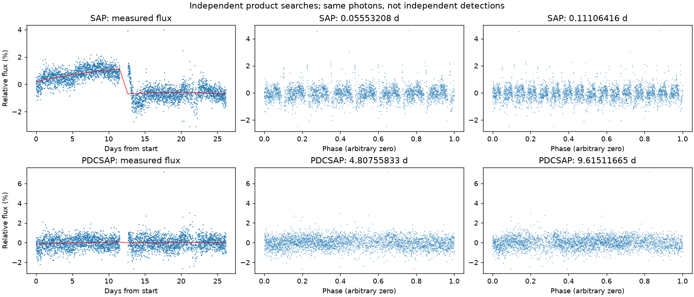
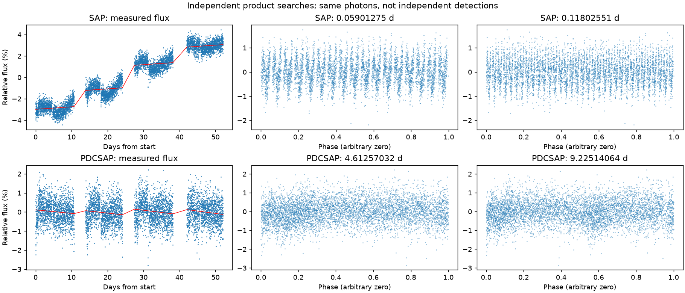

两种产品分别搜索周期，再分别比较观测时段。这里保留产品之间的分歧，不按得分挑选一个产品自动宣布发现。
| 产品 | 跨时段检出 | 最终优选周期（天） | 周期状态 |
|---|---|---|---|
| SAP | False | None | not_established |
| PDCSAP | False | None | not_established |

左图是未经本项目去趋势的测光，红线是拟合基线；中、右图去掉基线后，分别按各自候选周期及两倍折叠。未通过重复要求时，折叠图只展示最高分解释。

左图是未经本项目去趋势的测光，红线是拟合基线；中、右图去掉基线后，分别按各自候选周期及两倍折叠。未通过重复要求时，折叠图只展示最高分解释。